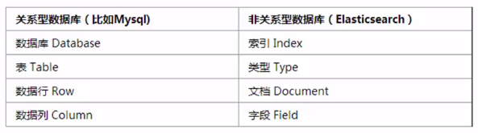

Learning Notes on ElasticSearch
“ELK Stack深入浅出视频”总结
1.

2.
Solr支持的文本格式比ES多, 但ES的实时搜索比Solr好
3.
mapping映射: 创建索引时,可以预先定义字段的类型以及相关属性
4.
[11] 19’52”
尽可能使用filter查询（减少使用基本查询），能够大大提高查询的性能
ElasticSearch在执行带有filter的查询时，会打开索引的每个segment文件（Lucene底层文件），然后判断各文档是否符合filter要求。
注意：
- 1).旧的segment文件不会变，新来的数据会产生新的segment文件。
- 2).Scriptfilters, Geo-filters, Date ranges这样的过滤方式开启cache无意义； exists, missing, range, term, terms查询默认是开启cache的。
5.
must: 条件必须满足，相当于and
should: 条件可以满足也可以不满足，相当于or
must_not: 条件不需要满足， 相当于not
“Elasticsearch: 权威指南“总结
1.
一个集群是一组拥有相同cluster.name的节点，他们能一起工作并共享数据，还提供容错与可伸缩性。
2.
你也许已经注意到 索引 这个词在 Elasticsearch 语境中包含多重意思， 所以有必要做一点说明：
- 索引（名词）：
如前所述，一个 索引 类似于传统关系数据库中的一个 数据库 ，是一个存储关系型文档的地方。 索引 (index) 的复数词为 indices 或 indexes。 - 索引（动词）：
索引一个文档 就是存储一个文档到一个 索引 （名词）中以便它可以被检索和查询到。这非常类似于 SQL 语句中的 INSERT 关键词，除了文档已存在时新文档会替换旧文档情况之外
3.1
2
3
4
5
6
7
8PUT /es_demo/employee/1
{
"first_name" : "John",
"last_name" : "Smith",
"age" : 25,
"about" : "I love to go rock climbing",
"interests": [ "sports", "music" ]
}
路径 /es_demo/employee/1 包含了三部分的信息：
es_demo: 索引名称
employee: 类型名称
1: 特定雇员的ID
4.
有两种形式的搜索API：一种是”轻量的”查询字符串 版本，要求在查询字符串中传递所有的 参数，另一种是更完整的 请求体 版本，要求使用 JSON 格式和更丰富的查询表达式作为搜索语言。
查询字符串版本优点就是简洁，但可读性差（url编码后），并且这种精简让调试更加晦涩和困难。而且很脆弱，一些查询字符串中很小的语法错误，像 -，:，/或者” 不匹配等，将会返回错误而不是搜索结果。查询字符串搜索允许任何用户在索引的任意字段上执行可能较慢且重量级的查询，这可能会暴露隐私信息，甚至将集群拖垮。因为这些原因，不推荐直接向用户暴露查询字符串搜索功能，除非对于集群和数据来说非常信任他们。在生产环境中更多地使用功能全面的请求体版本查询API，除了能完成以上所有功能，还有一些附加功能。
轻量搜索 GET all employees whose last_name is “Smith”(精确匹配)1
GET /es_demo/employee/_search?q=last_name:Smith
领域特定语言（DSL），指定了使用一个 JSON 请求。可以像如下代码重写上述查询：1
2
3
4
5
6
7
8GET /es_demo/employee/_search
{
"query":{
"match":{
"first_name": "Smith"
}
}
}
5.
实际上，在 Elasticsearch 中，数据是被存储和索引在 分片 中，而一个索引仅仅是逻辑上的命名空间， 这个命名空间由一个或者多个分片组合在一起。 然而，这是一个内部细节，应用程序无需关心分片，对于应用程序而言，只需知道文档位于一个 索引 内。 Elasticsearch 会处理所有的细节。
6.
索引(index)的名字必须是小写，不能以下划线开头，不能包含逗号
类型(type)命名可以是大写或者小写，但是不能以下划线或者句号开头，不应该包含逗号，并且长度限制为256个字符
7.
创建index和type, 并插入新的元素：1
2
3
4
5
6PUT /website/blog/123/_create
{
"title": "My first blog entry",
"text": "Just trying this out...",
"date": "2014/01/01"
}
_create可以起到检查的作用:只有_index 、 _type 和 _id 不存在时才接受该索引请求。如果创建新文档的请求成功执行，Elasticsearch 会返回元数据和一个 201 Created 的 HTTP 响应码。如果具有相同的 _index 、 _type 和 _id 的文档已经存在，Elasticsearch 将会返回 409 Conflict 响应码。
如果数据没有指定的 ID， Elasticsearch 可以帮我们自动生成 ID 。 请求的结构调整为： 不再使用 PUT 谓词(“使用这个 URL 存储这个文档”)， 而是使用 POST 谓词(“存储文档在这个 URL 命名空间下”)。1
2
3
4
5
6POST /website/blog/
{
"title": "My second blog entry",
"text": "Still trying this out...",
"date": "2014/01/02"
}
8.
在 Elasticsearch 中文档是 不可改变 的，不能修改它们。 相反，如果想要更新现有的文档，需要 重建索引 或者进行替换
假设某个文档中有三个字段，在更新（PUT）时只指定了两个字段，那么这个文档将会只有两个字段（替换，而无法修改）
9.
删除文档不会立即将文档从磁盘中删除，只是将文档标记为已删除状态。随着你不断的索引更多的数据，Elasticsearch 将会在后台清理标记为已删除的文档。
10.
乐观并发控制要更新的文档的_version必须与URL中的version一致(相等)
所有文档的更新或删除 API，都可以接受 version 参数，这允许你在代码中使用乐观的并发控制，这是一种明智的做法。1
2
3
4
5
6PUT /website/blog/123?version=5
{
"title": "My 1st blog entry",
"text": "Content of my 1st blog",
"date": "2014/01/01"
}
11.
通过外部系统使用版本控制要更新的文档的_version必须小于(相等不行)URL中的version1
2
3
4
5
6PUT /website/blog/123?version=8&version_type=external
{
"title": "My 1st blog entry",
"text": "Content of my 1st blog",
"date": "2014/01/01"
}
12.
文档的部分更新: update 请求最简单的一种形式是接收文档的一部分作为 doc 的参数， 它只是与现有的文档进行合并。对象被合并到一起，覆盖现有的字段，增加新的字段。 例如，增加字段 tags 和 views 到我们的博客文章，如下所示：1
2
3
4
5
6
7POST /website/blog/123/_update
{
"doc" : {
"tags" : [ "testing" ],
"views": 0
}
}
必须是POST不能是PUT
13.
如果需要从 Elasticsearch 检索很多文档，那么使用 multi-get 或者 mget API 来将这些检索请求放在一个请求中，将比逐个文档请求更快地检索到全部文档。
mget API 要求有一个 docs 数组作为参数，每个 元素包含需要检索文档的元数据， 包括 _index 、 _type 和 _id 。如果你想检索一个或者多个特定的字段，那么你可以通过 _source 参数来指定这些字段的名字：1
2
3
4
5
6
7
8
9
10
11
12
13
14
15
16GET /_mget
{
"docs" : [
{
"_index" : "website",
"_type" : "blog",
"_id" : 123
},
{
"_index" : "website",
"_type" : "pageviews",
"_id" : 1,
"_source": ["title", "url"]
}
]
}
等价于下面的代码：1
2
3
4
5
6
7
8
9
10
11
12
13
14GET /website/_mget
{
"docs" : [
{
"_type" : "blog",
"_id" : 123
},
{
"_type" : "pageviews",
"_id" : 1,
"_source": ["title", "url"]
}
]
}
即使有某个文档没有找到，上述请求的 HTTP 状态码仍然是 200。事实上，即使请求 没有 找到任何文档，它的状态码依然是 200。因为 mget 请求本身已经成功执行。 为了确定某个文档查找是成功或者失败，你需要检查 found 标记。
14.
批量查询用_mget， 批量增删改用_bulk: mget 可以一次取回多个文档， bulk API 允许在单个步骤中进行多次 create 、 index 、 update 或 delete 请求。1
2
3
4
5
6# OK
POST /website/pageviews/_bulk
{ "index": {"_id": 1}}
{ "title": "Xiaowei Liu's Blog.", "url": "xiaoweiliu.cn"}
{ "index": { "_type": "blog", "_id": "123"}}
{ "title": "Overriding: My 1st blog title", "text": "Overriding: Content of 1st blog", "date": "2014/01/03" }
注意第五行，请求体中必须用一行包含所有要更新的数据，不能分到多行中。例如下面的代码是错误的1
2
3
4
5
6
7
8# NO
POST /website/pageviews/_bulk
{ "index": {"_id": 1}}
{ "title": "Xiaowei Liu's Blog.", "url": "xiaoweiliu.cn"}
{ "index": { "_type": "blog", "_id": "123"}}
{ "title": "Overriding: My 1st blog title"}
{ "text": "Overriding: Content of 1st blog" }
{ "date": "2014/01/03" }
15.
删除某个type中的所有数据1
2
3
4
5
6POST /industry_chain/nodes/_delete_by_query
{
"query": {
"match_all": {}
}
}
16.
中文分词使用ik分词(ik_smart/ik_max_word)1
2
3
4
5
6
7
8
9
10
11
12
13
14
15
16
17
18
19
20
21
22
23
24
25
26
27
28
29
30
31
32
33curl -XGET 'http://192.168.1.8:9200/_analyze?pretty&analyzer=ik_smart' -d "中华人民共和国今天成立啦"
{
"tokens" : [
{
"token" : "中华人民共和国",
"start_offset" : 0,
"end_offset" : 7,
"type" : "CN_WORD",
"position" : 0
},
{
"token" : "今天",
"start_offset" : 7,
"end_offset" : 9,
"type" : "CN_WORD",
"position" : 1
},
{
"token" : "成立",
"start_offset" : 9,
"end_offset" : 11,
"type" : "CN_WORD",
"position" : 2
},
{
"token" : "啦",
"start_offset" : 11,
"end_offset" : 12,
"type" : "CN_CHAR",
"position" : 3
}
]
}
1 | curl -XGET 'http://192.168.1.8:9200/_analyze?pretty&analyzer=ik_max_word' -d "中华人民共和国今天成立啦" |
中文分词使用standard/english/chinese分词，每个字被分成单独的词1
2
3curl -XGET 'http://192.168.1.8:9200/_analyze?pretty&analyzer=standard' -d "中华人民共和国今天成立啦"
curl -XGET 'http://192.168.1.8:9200/_analyze?pretty&analyzer=english' -d "中华人民共和国今天成立啦"
curl -XGET 'http://192.168.1.8:9200/_analyze?pretty&analyzer=chinese' -d "中华人民共和国今天成立啦"
也可以直接通过浏览器进行测试:http://192.168.1.8:9200/industry_chain/_analyze?pretty&text=中华人民共和国今天成立啦&analyzer=ik_smart
17.Fields with the same name in different mapping types in the same index must have the same mapping.
18.
Updating existing mappings
Other than where documented, existing type and field mappings cannot be updated. Changing the mapping would mean invalidating already indexed documents. Instead, you should create a new index with the correct mappings and reindex your data into that index.
19.
Demo
1 | #------------------------------------------------------ |